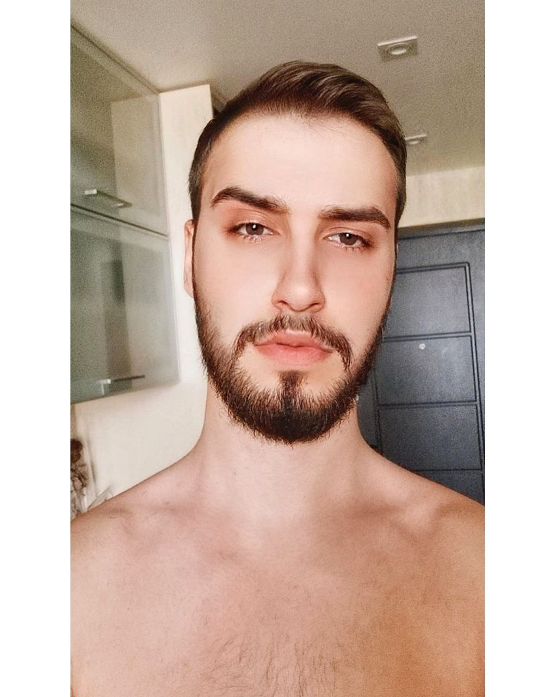

Anil Cem Denli
Software Developer
Summary
From a young age, I have been fascinated by technology and its ability to
transform the way we live and work. Throughout my academic journey, I have
honed my skills in programming languages such as Java, Python and have
gained hands-on experience through various projects.
Education
- Karazin University - Computer Science
(2018-2019)
-
Politecnik University - Computer Engineering
(2019-2023)
Work Experience
-
Technician at IT4Tecnology, Kharkiv
May 2019 — Oct 2020
-
Maintained and updated knowledge base, troubleshooting guidelines,
and FAQs
-
Repaired and replaced defective parts, components, or software
-
Account Manager & Team Leader at Istrade Investment, Kharkiv
Oct 2020 — Feb 2022
-
Developed financial models for portfolio analysis and risk
management, resulting in a X% decrease in portfolio volatility
-
Researched macroeconomic and industry trends to identify potential
risks and opportunities
-
Mentored and trained team members to develop their skills and career
paths
-
Cad/Cam Programmer & Operator at Futura Composites, Heerhugowaard
Oct 2020 — Feb 2022
- Utilized CAD/CAM software to design and optimize CNC programs
-
Utilized CAD/CAM software to create CNC programs from XD models and
blueprints
-
Set up and operated a variety of CNC machines, including lathes,
milling machines, and EDMs
-
Trained and supervised junior CNC operators to ensure quality and
efficiency standards were met
-
Developed jigs, fixtures, and tooling to improve production
efficiency and quality
Skills
- Java
- Pyhton
- Spring
- Html
- Solidworks
Language
- Turkish - C2 - Native
- English - C1 - Advance
- Russian - B1 - Intermediate
- Dutch - A1 - Begginner
Contact
Linkedin Profile
Contact Info